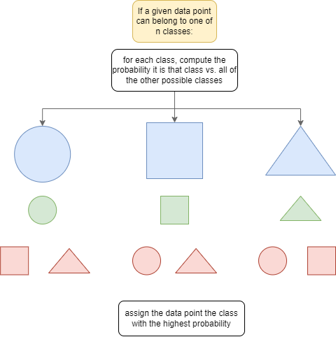

Locally Weighted Logistic Regression
Introduction
Locally weighted regression finds the weights of a small number of points at a time, based on the distance between a point and its neighbors. This strategy can be applied to classification via logistic regression, which uses a sigmoid relationship to determine whether an individual data point belongs to a certain class. For more than one class, logistic regression requires the one-versus-many method, where the data is split into a single class and all the classes that are not that class. Our goal was to implement one-vs-many logistic regression within the Lowess class to improve classification predictions, and then test the model on real data to confirm its accuracy.
Process
This part of the project was based off of our previous project, which investigated locally weighted regression. Locally weighted regression predicts weights for a set of neighbors within the data by calculating the distance from each point to its neighbors. Our previous Lowess class used a linear regression model to make predictions, so we needed to modify this class to better predict for logistic regression. We modified this class, using scikit-learn's Logistic Regression model, and set it to classify by one versus rest classification for each class in a given dataset. The model predicts the likelihood of a given point to be a part of a class for each class in the dataset, and then chooses the most likely class as its prediction for that data point. You can see our logistic regression model here and you can see our implementation in this notebook. We used the sklearn iris dataset for this section.
Conclusions
Our locally weighted logistic regression model tends to perform better on the iris dataset than Calvin Chi's model, which uses a similar strategy with a somewhat different implementation. However, accuracy scores vary across different runs. The scikit-learn Logistic Regression model used as a base may influence the final results.